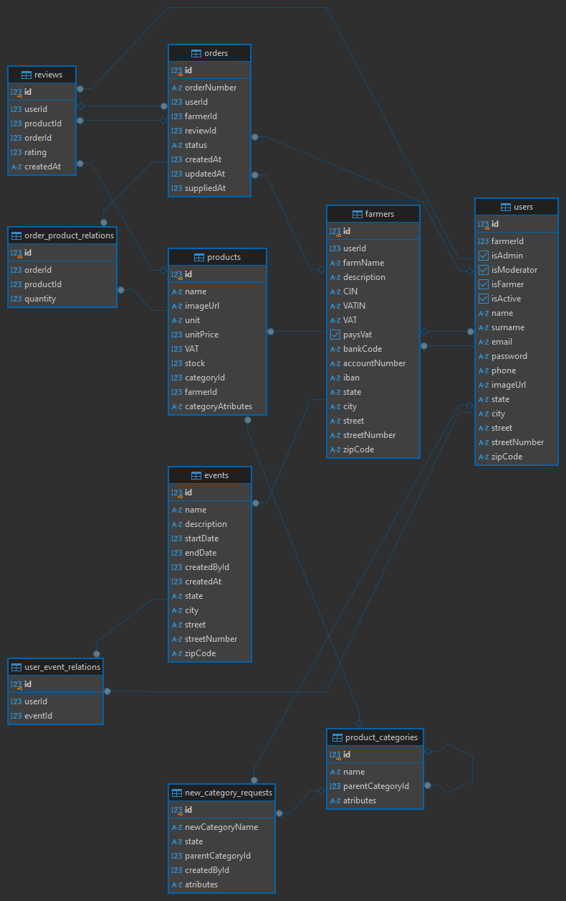

Zelný trh
- Autoři
- Lukáš Katona
xkaton00@stud.fit.vutbr.cz
backend:
- Event, Farmer, Product, ProductCategory, User Api
- Event, Farmer, Product, ProductCategory, User, UserEventRelation ORM modely
- Auth.py - obsahuje metody na autentiazce a autentifikaci uživatele
- db-init.py - inicializace databáze
frontend:
- Základní rozložení stránky
- Login dialog
- Prohlížení nabídky produktů
- Filtrování atributů podle dané kategorie
- Úprava osobních informací přihlášeného uživatele
- Správa událostí, vytváření a editování, přidání do oblíbených
- Správa kategorií produktů a vytváření návrhu na nové kategorie
- Klára Kejdová
xkejdo00@stud.fit.vutbr.cz
backend:
- NewCategoryRequest, Order, Review Api
- NewCategoryRequest, Order, Review, OrderProductRelation ORM modely
- db-init.py - inicializace databáze
frontend:
- Register dialog
- Vytváření nabídky produktů
- Filtrování a vyhledávání produktů podle základních atributů
- Přidávání produktů do košíku
- Stránka nákupního košíku s moností úpravy jednotlivých položek
- Administrativní stránka na správu jednoltivých uživatelů a jejich rolí
- Stránka s příchozími a odchozími objednávkami
dokumentace
- URL aplikace
- http://www.stud.fit.vutbr.cz/~xkaton00/IIS/
Uživatelé systému pro testování
| Login |
Heslo |
Role |
| jd@gmail.com |
password |
Administrátor |
| es@gmail.com |
password |
Moderátor |
| sw@gmail.com |
password |
Farmář |
| jb@gmail.com |
password |
Zákazník |
| od@gmail.com |
password |
Neaktivní uživatel |
Video
https://drive.google.com/e-farm-video
Implementace
Projekt je rozdělen do dvou částí, backend a frontend. Backend je napsán v jazyce Python s použitím FastAPI,
SQLAlchemy, SQLModel, frontend je napsán pomocí frameworku Angular s použitím standalone komponent. Databáze je typu
PostgreSQL.
Na beckenndu jsou ve složce "entities" implementovány ORM modely User, Farmer, Product, Category, Order, Review,
Event, NewCategoryRequest včetně entit vztahů, které reprezentují jednotlivé entity v databázi. Uživatel definuje
základní entitu osoby, která může mít nastavené vlastnosti jako moderátor, či administrátor. Entita farmář pak tento
model rozšiřuje.
Pak se zde nachází druhá hlavní složka "api" kde jsou implementovány jednotlivé endpointy, které zajišťují
komunikaci mezi frontendem a backendem. Jednotlivé soubory jsou přehledně rozděleny podle entit.
Na frontendu je složka "app", v níž se nachází primární komponenty stránky a složky, "components", "services" a
"interceptors". Složka "components" obsahuje konkrétní částí stránek, ve složce "services" se nachází služba
AuthStoreService, která drží akutální data přihlášeného uživatele na straně klienta. Poslední složkou je
"interceptors", kde je uložen AuthInterceptor, který do všech Http požadavků vkládá hlavičku autorizace s tokenem
přihlášeného uživatele a zpracovává errory odpovědí.
Role uživatelů jsou rozděleny na 5 základních skupin: Administrátor, Moderátor, Prodavač (Farmář) a Zákazník či
nepřihlášený uživatel.
User endopinty: UserApi.py
- GET /users
- Práva: administrátor
- Použítí: přehled všech uživatelů na admin stránce
- GET /users/me
- Práva: aktuálně přihlášený uživatel
- Použití: pro uložení aktuálně přihlášeného uživatele do authStore
- GET /users/user_id
- Práva: všichni
- Použití: banner informací o farmáři
- POST /users
- Práva: všichni
- Použití: vytvoření nového uživatele
- PATCH /users/user_id
- Práva: administrátor, přihlíšený uživatel (pouze své informace)
- Použití: formulář osobních informací
- PATCH /users/user_id/password
- Práva: administrátor, přihlíšený uživatel (pouze své heslo)
- Použití: není implementováno na FE
- DELETE /users/user_id
- Práva: administrátor
- Použití: smazání uživatele
Farmer endopinty: FarmerApi.py
- GET /farmers
- Práva: všichni
- Použití: přehled všech farmářů na amdin stránce, stránky produtků podle farmářů, osobní informace
uživatele
- GET /farmers/farmer_id
- Práva: všichni
- Použití: banner informací o farmáři
- GET /farmers/user_id/by-user-id
- Práva: aktuálně přihlášený uživatel, administrátor
- Použití: přehled produktů farmáře, osobní informace
- POST /farmers
- Práva: akutuálně přihlášený uživatel, administrátor
- Použití: vytvoření nového farmáře
- PATCH /farmers/farmer_id
- Práva: farmář který je akutuálně přihlášený, administrátor
- Použití: úprava vlastního profilu, administrativní stránka
- DELETE /farmers/farmer_id
- Práva: administrátor
- Použití: smazání farmáře na sdministrativní stránce
Product endopinty: ProductApi.py
- GET /products
- Práva: všichni
- Použití: přehled všech produktů na stránce
- GET /products/product_id
- Práva: všichni
- Použití: přidávání produktů, karty produktů
- GET /products/most-popular
- Práva: všichni
- Použití: boční panel populárních produktů
- POST /products
- Práva: farmář
- Použití: vytvoření nového produktu
- PATCH /products/product_id
- Práva: farmář
- Použití: úprava vlastního produktu
- DELETE /products/product_id
- Práva: farmář
- Použití: smazání vlastního produktu
Order endopinty: OrderApi.py
- GET /orders
- Práva: přihlášený uživatel
- Použití: přehled všech příchozích i odchozích objednávek, objednávky v košíku
- GET /orders/order_id/products
- Práva: přihlášený uživatel
- Použití: přehled produktů v objednávce
- GET orders/number-of-products
- Práva: přihlášený uživatel
- Použití: počet produktů v košíku
- PATCH orders/order_id/status
- Práva: přihlášený uživatel
- Použití: změna stavu objednávky - košík/objednáno, pro farmáře status odeslání
- POST /orders/add-product
- Práva: přihlášený uživatel
- Použití: přidání produktu do košíku
- PATCH /orders/order_id/edit-product
- Práva: přihlášený uživatel
- Použití: úprava produktu v košíku
- DELETE /orders/order_id
- Práva: přihlášený uživatel
- Použití: smazání objednávky z košíku
- DELETE /orders/order_id/product/product_id
- Práva: přihlášený uživatel
- Použití: smazání produktu z košíku
Category endopinty v ProductsCategoryApi.py
- GET /product-categories
- Práva: všichni
- Použití: přehled všech kategorií na stránce
- PATCH /product-categories/category_id
- Práva: administrátor, moderátor
- Použití: upravení nové kategorie a jejich atributů
- POST /product-categories
- Práva: administrátor, moderátor
- Použití: vytvoření nové kategorie
- DELETE /product-categories/category_id
- Práva: administrátor, moderátor
- Použití: smazání kategorie
Event endopinty v EventApi.py
- GET /events
- Práva: přihlášený uživatel
- Použití: přehled všech událostí
- GET /events/user_id
- Práva: přihlášený uživatel
- Použití: přehled událostí přidaných mezi oblíbené daného uživatele
- POST /events
- Práva: farmář
- Použití: vytvoření nové události
- PATCH /events/event_id
- Práva: farmář
- Použití: úprava vlastních události
- DELETE /events/event_id
- Práva: farmář
- Použití: smazání vlastní události
- POST /events/event_id/join/user_id
- Práva: přihlášený uživatel
- Použití: přidání sebe samého do události
- DELETE /events/event_id/join/user_id
- Práva: přihlášený uživatel
- Použití: odebrání sebe samého z události
Review endopinty v ReviewApi.py
- GET /reviews
- Práva: všichni
- Použití: přehled všech recenzí na stránce u produktů a v "nejvíce populární" baneru
- POST /reviews
- Práva: přihlášený uživatel
- Použití: vytvoření nové recenze u zakoupených produktů
- PATCH /reviews/review_id
- Práva: přihlášený uživatel
- Použití: úprava vlastní recenze
- DELETE /reviews/review_id
- Práva: přihlášený uživatel
- Použití: není implementováno na FE
NewCategoryRequest endopinty v NewCategoryRequestApi.py
- GET /category-requests
- Práva: přihlášení uživatelé
- Použití: stránka moderátora na správu návrhů, uživatelský přehled návrhů kategorií
- POST /category-requests
- Práva: přihlášený uživatel
- Použití: vytvoření nového návrhu kategorie
- PATCH /category-requests/category_id
- Práva: administrátor, moderátor
- Použití: schválení návrhu kategorie
- DELETE /category-requests/category_id
- Práva: administrátor, moderátor
- Použití: není implementováno na FE
Databáze

Instalace
Postup instalace na server
- Server hostujeme pomocí internetové služby Koyeb
- Server se nasazuje ze zvolené větve z připojeného github repozitáře
- Důležitou částí je soubor reqirements.txt, který obsahuje verze použitých knihoven
- Služba Koyeb vytvoří virtuální prostředí ve kterérm nainstaluje požadované knihovny
- Ve virtuáulním prostředí se spustí server pomocí služby Uvicorn
Softwarové požadavky